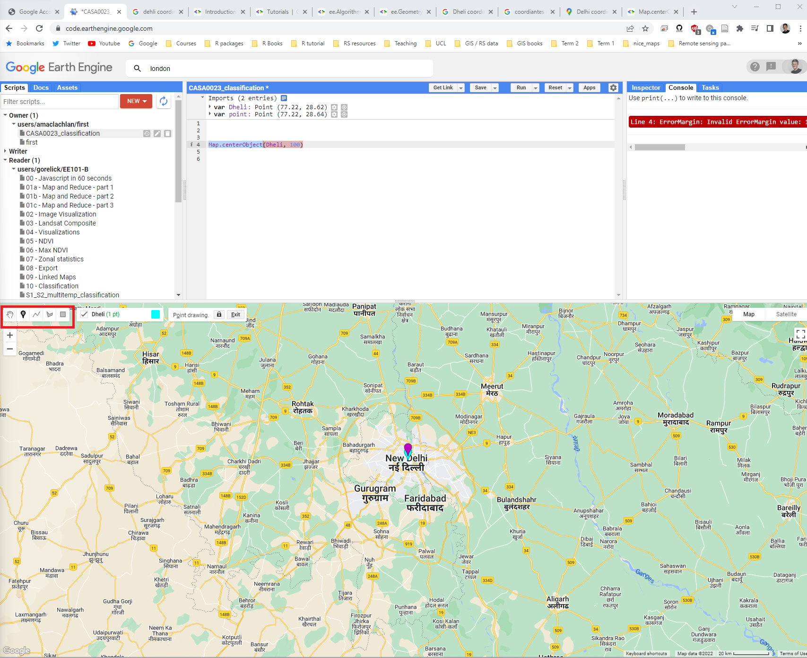
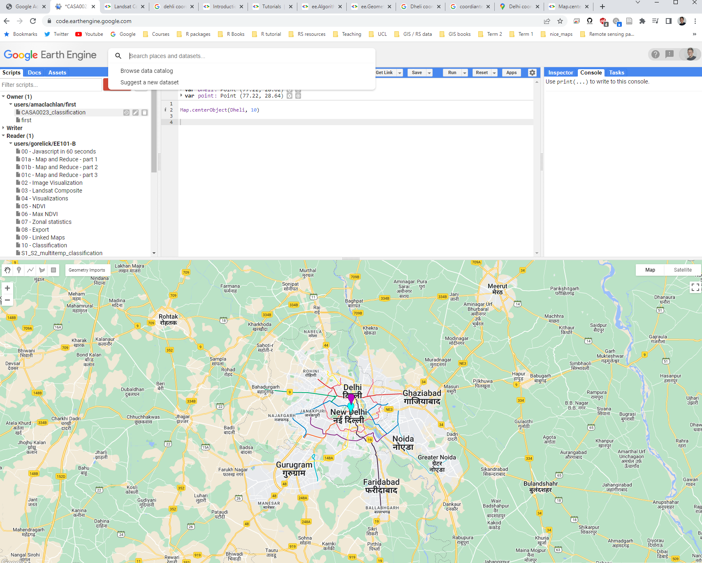
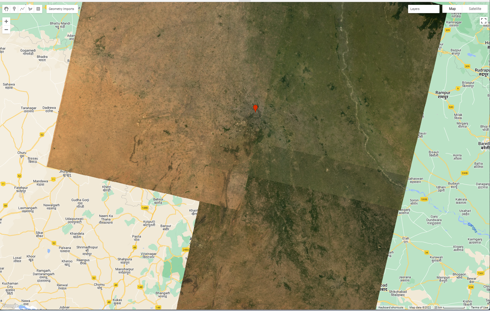
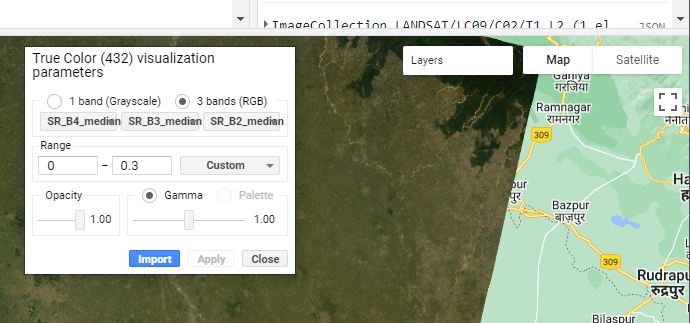
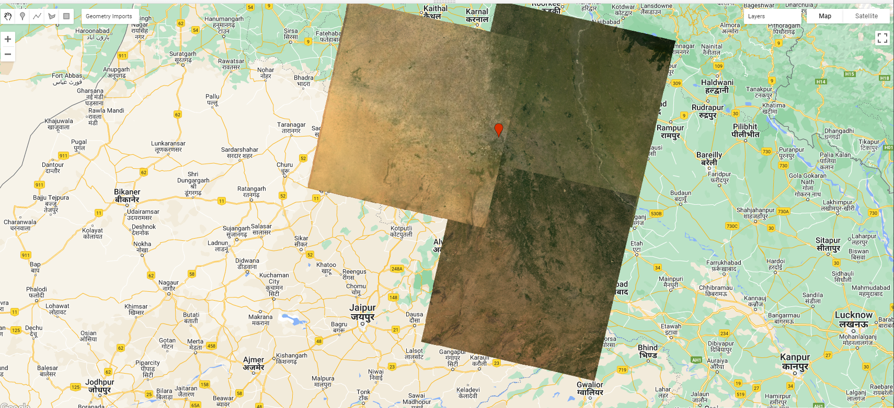
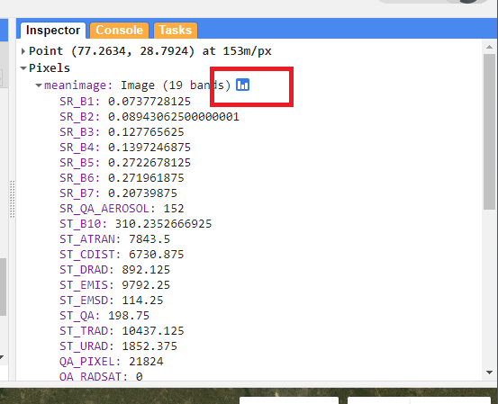

// All the javascript you need to know (almost)
var number = 1
var string = 'Hello, World!'
var list = [1.23, 8, -3]
print(list[2])
var dictionary = {
a: 'Hello',
b: 10,
c: 0.1343,
d: list
}
print(dictionary.b)
print(number, string, list, dictionary)5 Google Earth Engine I
5.1 Resources
This week
The original GEE paper
- Gorelick, N., Hancher, M., Dixon, M., Ilyushchenko, S., Thau, D., Moore, R., 2017. Google Earth Engine: Planetary-scale geospatial analysis for everyone. Remote Sensing of Environment, Big Remotely Sensed Data: tools, applications and experiences 202, 18–27.
This paper is very similar, but focus on SECTION VII.GEE Applications
Amani, M., Ghorbanian, A., Ahmadi, S.A., Kakooei, M., Moghimi, A., Mirmazloumi, S.M., Moghaddam, S.H.A., Mahdavi, S., Ghahremanloo, M., Parsian, S., Wu, Q., Brisco, B., 2020. Google Earth Engine Cloud Computing Platform for Remote Sensing Big Data Applications: A Comprehensive Review. IEEE Journal of Selected Topics in Applied Earth Observations and Remote Sensing 13, 5326–5350.
GEE applications topical collection, search for urban related studies
-
Cloud-Based Remote Sensing with Google Earth Engine (accessed 1.5.23).
- Section F1 Programming and Remote Sensing Basics
- Section F2.0 Image Manipulation: Bands, Arithmetic, Thresholds, and Masks
- Chapter F3.2 Neighborhood-Based Image Transformation
- Chapter F3.1: Advanced Pixel-Based Image Transformation (PCA and tasselled cap)
- Chapter A1.2 Urban Envrionments
- Chapter A1.3: Built Environments
-
Kochenour, C., 2020. Introduction — Remote Sensing with Google Earth Engine.
- Similar to the GEE book above, with some nice workflows.
For this week we are going to move away form R and focus on Google Earth Engine, which is still quite new for me too.
Google Earth Engine (GEE) is a platform that lets us analyse data that is stored remotely, each time we write some code it is sent to a server to be evaluated and the results are returned to us. As we don’t compute locally it speeds all of our processes up!
GEE uses Javascript…and according to the GEE team this is all of the Javascript you need to know:
When you open GEE code editor you will see the following screen composed of these parts:

5.2 Examples
Before we begin explore some of the examples in the script editor, start with the user interface ones..
5.3 Points
We can make a new point and center the map to it in code editor with
// Construct a point from coordinates.
var Delhi_point = ee.Geometry.Point([77.216721, 28.644800]);
Map.centerObject(Delhi_point, 10)In this case my city is Delhi, when i enter this code you will get a message asking if you want to convert it to an imported record, click convert and it will appear in the imports and also as a point on the map!
Alternatively we can click the point icon on the map and add a new point…> new layer > give an suitable name

5.4 Landsat data
Now we need to load some surface reflectance data > browse data catalogue > click through to a Landsat surface reflectance dataset, Collection 2 and tier 1. You will see the code to import the data to your script and if you click the open window icon you can see an example…

Here through let’s just load some data…
var dataset = ee.ImageCollection('LANDSAT/LC09/C02/T1_L2')
.filterDate('2022-01-01', '2022-02-01');This doesn’t do anything until we actually add it to our map….the final Landsat 9 here is what the layer will be called on the map.
Map.addLayer(dataset, {bands: ["SR_B4", "SR_B3", "SR_B2"]}, "Landsat 9")What has this actually done? Try zooming out and inspecting the image. On the right hand side click inspector and click around the image…
At the moment we aren’t sure exactly what images we are using or how much cloud cover is in them…to sort this…
Note, that in GEE // comments out a line of code…
// Load Landsat 9 data, filter by date, month, and bounds.
var dataset = ee.ImageCollection('LANDSAT/LC09/C02/T1_L2')
.filterDate('2020-01-01', '2022-10-10')
// .filter(ee.Filter.calendarRange(1, 2, 'month')) // Jan and Feb images
.filterBounds(Delhi_point) // Intersecting ROI
.filter(ee.Filter.lt("CLOUD_COVER", 0.1));
print(dataset, "datasetprint")5.5 Problems
In my case this provides six images…and if we wanted to export the metadata of these images we could using…
Export.table.toDrive(dataset, 'exportAsCSV', 'GEE', 'CSVexport', 'CSV');Now I have two problems:
The collection has six images within it and when i display it
Map.addLayer(filtered, {bands: ["SR_B4", "SR_B3", "SR_B2"]})we get the top most image.The image only covers my single point and not the whole of Dehli / the administration area.
5.5.1 Polygons
Let’s deal with problem two first…
I could change my point to a shape that i can draw. Next to the point icon (in the map/layer window) there is a polygon icon.
I could also add another point to my current single point where i want the next tile to be
I could filter based on tiles from the image collection
I can upload a file, such as one from GADM. To do so, download the appropriate GADM boundary for your city, query it in QGIS to get a city outline. For me this was the shapefile
gadm41_IND_2(just upload this .shp and associated files, not all the others) and I need to filter (in GEE or other software) theGID_1column for the rowIND.25_1.
On GEE there is an assets button where you can upload data, upload your shapefile. Next we load it and filter what you need…
var Delhi = ee.FeatureCollection('users/andrewmaclachlan/india')
.filter('GID_1 == "IND.25_1"');To now filter based on this we include it as our filter bounds. At the time of writing there weren’t enough cloud free Landsat 9 scenes over Delhi to create a complete image, so I have changed to Landsat 8…
var oneimage_study_area_cloud = ee.ImageCollection('LANDSAT/LC08/C02/T1_L2')
.filterDate('2021-06-01', '2022-10-10')
.filterBounds(Delhi) // Intersecting ROI
.filter(ee.Filter.lt("CLOUD_COVER", 0.1));Within the Landsat 8 filename we can see which path and rows our tiles are on…LANDSAT/LC08/C02/T1_L2/LC08_146040_20211127
Using these dates I have 4 images from path 146, row 40, 3 image from path 146, row 41 and 4 images from path 147, row 40. See the Landsat Acquisition Tool to check your path and row
5.5.2 Single images
Now problem one…
- I could just select a single image from the collection by filtering using the specific date, which you can get from the console window when printing the images within the collection. Landsat (and most other EO datasets) have the date within the file path name, this is….
LC09_147040_20220403
var oneimage = ee.ImageCollection('LANDSAT/LC09/C02/T1_L2')
.filterDate('2022-04-03', '2022-04-04')
.filterBounds(Delhi); // Intersecting ROI- I can load the specific image(s) i want…
var image_146_40 = ee.Image('LANDSAT/LC08/C02/T1_L2/LC08_146040_20211127')- I can reduce the collection to a single image through taking the mean, median, max or min using the
imageCollection.reduce()function…
//oneimage_study_area_cloud is the image collection we made
var median = oneimage_study_area_cloud.reduce(ee.Reducer.median());
// print the image info
print(median, "median")Is the median the best image to make though ? watch from 27:28 to 31:46
5.6 Better images
Until now we haven’t really dealt with the scaling factors from the Landsat surface reflectance product…
Landsat Collection 2 surface reflectance has a scale factor of 0.0000275 and an additional offset of -0.2 per pixel.
We do this through making a function and then calling our collection to the function
// Applies scaling factors in a function
function applyScaleFactors(image) {
var opticalBands = image.select('SR_B.').multiply(0.0000275).add(-0.2);
var thermalBands = image.select('ST_B.*').multiply(0.00341802).add(149.0);
return image.addBands(opticalBands, null, true)
.addBands(thermalBands, null, true);
}
// call our collection to the function and assign it to a new variable
var oneimage_study_area_cloud_scale = oneimage_study_area_cloud.map(applyScaleFactors);
// apply the median reducer
var oneimage_study_area_cloud_scale_median = oneimage_study_area_cloud_scale.reduce(ee.Reducer.median());We can then map this…
// set up some of the visualisation paramters
var vis_params = {
bands: ['SR_B4_median', 'SR_B3_median', 'SR_B2_median'],
min: 0.0,
max: 0.3,
};
// add a layer to the map
Map.addLayer(oneimage_study_area_cloud_scale_median, vis_params, 'True Color (432)');You should have produced something like this…

Note here that we give this layer a name 'True Color (432)' this means on the map under the layer button it will have that same name. Here, you can also set the transparency of each layer and even change the bands that display (although this doesn’t change the code)

5.7 Mosaic images
When we look at these images there might be very apparent differences between the tiles - this is probably due to the date of collection and the atmospheric correction applied (remember that it’s a model of the atmosphere).
var mosaic = oneimage_study_area_cloud_scale.mosaic();
var vis_params2 = {
bands: ['SR_B4', 'SR_B3', 'SR_B2'],
min: 0.0,
max: 0.3,
};
Map.addLayer(mosaic, vis_params2, 'spatial mosaic');In this example i’ve mosaiced the image collection (before taking the median values). This has taken images according to their order in the collection (last on top).You’ll notice there isn’t much difference…but you will see the effect of the last on top rule with clear demarcations across where images overlap…making the problem we wanted to resolve worse!

The best easy solution we have here is to take a mean of all overlapping pixels…or if we had a larger collection the median would yield better results.
var meanImage = oneimage_study_area_cloud_scale.mean();
Map.addLayer(meanImage, vis_params2, 'mean');However, as noted in the lectures we could also match the histograms of the images, this is beyond the scope of the practical but more details are:
- In Nocel Gorelick’s Histogram Matching Earth Engine by Example article and code
5.8 Clip images
Currently our analysis has spanned the tiles that cover the study area - in my case this is three tiles. So we should clip them to our current study area. After the clip i’m also just selecting the bands i want.
We could also visualise this with, where have used the interactive visulisation box to select my min and max values…
var clip = meanImage.clip(Delhi)
.select(['SR_B1', 'SR_B2', 'SR_B3', 'SR_B4', 'SR_B5', 'SR_B6', 'SR_B7']);
var vis_params3 = {
bands: ['SR_B4', 'SR_B3', 'SR_B2'],
min: 0,
max: 0.3,
};
// map the layer
Map.addLayer(clip, vis_params3, 'clip');5.9 Texture measures
As we saw earlier in the module we can compute texture…however, the glcmTexture() function requires an integer value and as our values are in surface reflectance this will mean they will be converted to 1 and 0s. To explore this, add the clipped surface reflectance layer to the map (using the code above)…Then use the inspector tab and the list view to query individual pixels….

To resolve this we need to multiple our surface reflectance so we can compute texture. If we didn’t do this our texture would just be 1s and 0s. ….
Note, that we are selecting a lot of data here…if GEE shows as unresponsive click wait and it should process, otherwise reduce the number of bands.
var glcm = clip.select(['SR_B1', 'SR_B2', 'SR_B3', 'SR_B4', 'SR_B5', 'SR_B6', 'SR_B7'])
.multiply(1000)
.toUint16()
.glcmTexture({size: 1})
.select('SR_.._contrast|SR_.._diss')
// you don't need this line as well as clip just has 7 bands in it.
.addBands(clip);
// add to the map, but change the range values
Map.addLayer(glcm, {min:14, max: 650}, 'glcm');Here note:
- the function
.toUint16()as.glcmTexturewon’t work with 32 bit data - size 1, is the size of the neighborhood to include in each GLCM.The value refers to the number of pixels to move from the central pixel, so a value of 1 creates a surrounding 3 by 3 grid.
- The selection function uses a regular expression to pull out just contrast and dissmilarity
- As the texture function just outputs the texture measures, i’ve added back in the original bands to the image collection.
5.10 PCA
PCA in GEE is somewhat more complex that it was in R, by just using the one function. Most of this code is take from the GEE Eigen Analysis guide ….to start with set the:
- Scale: 30 meters
- Band names: from the texture and original bands collection
- Region: the geometry points (x,y coordinates) of the study area
We then center the data to the mean (in the code below) and divide by the standard deviation that happens in the next section
// scale and band names
var scale = 30;
var bandNames = glcm.bandNames();
var region = Delhi.geometry();
Map.centerObject(region, 10);
Map.addLayer(ee.Image().paint(region, 0, 2), {}, 'Region');
print(region, "Delhi_geometry")
// mean center the data and SD strech the princapal components
// and an SD stretch of the principal components.
var meanDict = glcm.reduceRegion({
reducer: ee.Reducer.mean(),
geometry: region,
scale: scale,
maxPixels: 1e9
});
var means = ee.Image.constant(meanDict.values(bandNames));
var centered = glcm.subtract(means);We can use this function to sort out our bandnames
// This helper function returns a list of new band names.
var getNewBandNames = function(prefix) {
var seq = ee.List.sequence(1, bandNames.length());
return seq.map(function(b) {
return ee.String(prefix).cat(ee.Number(b).int());
});
};Then we can pass our centered data to the PCA function, here i have added some code from Guo Qiqu that will display the % variance explained by each component. Note i have just used this function to get what i need here, and that is the PCA output.
// This function accepts mean centered imagery, a scale and
// a region in which to perform the analysis. It returns the
// Principal Components (PC) in the region as a new image.
var getPrincipalComponents = function(centered, scale, region) {
// Collapse the bands of the image into a 1D array per pixel.
var arrays = centered.toArray();
// Compute the covariance of the bands within the region.
var covar = arrays.reduceRegion({
reducer: ee.Reducer.centeredCovariance(),
geometry: region,
scale: scale,
maxPixels: 1e9
});
// Get the 'array' covariance result and cast to an array.
// This represents the band-to-band covariance within the region.
var covarArray = ee.Array(covar.get('array'));
// Perform an eigen analysis and slice apart the values and vectors.
var eigens = covarArray.eigen();
// This is a P-length vector of Eigenvalues.
var eigenValues = eigens.slice(1, 0, 1);
// This is a PxP matrix with eigenvectors in rows.
var eigenValuesList = eigenValues.toList().flatten()
var total = eigenValuesList.reduce(ee.Reducer.sum())
var percentageVariance = eigenValuesList.map(function(item) {
return (ee.Number(item).divide(total)).multiply(100).format('%.2f')
})
print("percentageVariance", percentageVariance)
var eigenVectors = eigens.slice(1, 1);
// Convert the array image to 2D arrays for matrix computations.
var arrayImage = arrays.toArray(1);
// Left multiply the image array by the matrix of eigenvectors.
var principalComponents = ee.Image(eigenVectors).matrixMultiply(arrayImage);
// Turn the square roots of the Eigenvalues into a P-band image.
var sdImage = ee.Image(eigenValues.sqrt())
.arrayProject([0]).arrayFlatten([getNewBandNames('sd')]);
// Turn the PCs into a P-band image, normalized by SD.
return principalComponents
// Throw out an an unneeded dimension, [[]] -> [].
.arrayProject([0])
// Make the one band array image a multi-band image, [] -> image.
.arrayFlatten([getNewBandNames('pc')])
// Normalize the PCs by their SDs.
.divide(sdImage);
};
// Get the PCs at the specified scale and in the specified region
var pcImage = getPrincipalComponents(centered, scale, region);
// Plot each PC as a new layer
for (var i = 0; i < bandNames.length().getInfo(); i++) {
var band = pcImage.bandNames().get(i).getInfo();
Map.addLayer(pcImage.select([band]), {min: -2, max: 2}, band);
}We can then plot each component with a for loop:
// Plot each PC as a new layer
for (var i = 0; i < bandNames.length().getInfo(); i++) {
var band = pcImage.bandNames().get(i).getInfo();
Map.addLayer(pcImage.select([band]), {min: -2, max: 2}, band);
}In my case i can see that the first component explains 79% of the variance within the collection and the second component 13%….we can just add these bands instead of the entire image.
Map.addLayer(pcImage, {bands: ['pc2', 'pc1'], min: -2, max: 2}, 'PCA bands 1 and 2');5.11 Exporting
There are a number of ways you can export data from GEE, to your Google Drive, Cloud storage or as an Asset for future use.
To export it to your drive…
// select the bands you want
var PCA_out = pcImage.select(['pc1', 'pc2'])
var projection = PCA_out.select('pc1').projection().getInfo();
print(projection, "output_projection")
var bounds = Delhi.geometry();
// Export the image, specifying the CRS, transform, and region.
Export.image.toDrive({
image: PCA_out,
description: 'PCA_Delhi',
scale:30,
crs: projection.crs,
maxPixels: 100E10,
region: bounds
});Now when you run the script a task will appear in the task menu, to export your file click Run and then it will save into your Google Drive so you can download it locally.
Note that setting the region here will mean that if you haven’t performed a clip it will just export the region you have set.
5.12 Band math
It is also possible to quickly calculate indices in GEE…
//NDVI
var NDVI_1 = clip.select('SR_B5').subtract(clip.select('SR_B4'))
.divide(clip.select('SR_5').add(clip.select('SR_B4')));
Map.addLayer(NDVI_1, { min: -1, max: 1, palette: ['blue', 'white', 'green']}, 'NDVI');NDVI/ the formula to compute it even has it’s own function…
var NDVI_2 = clip.normalizedDifference([SR_B5, SR_B4]);5.13 GEE apps
A real feature of GEE is the ability to turn code into responsive applications. Whilst this is beyond the scope of this module, exploring some of these apps might give you some ideas for your project proposals:
5.14 GEE Data
5.14.1 GEE catlog
GEE has a massive catalog of data that we can search and just load directly into our script…over reading week explore the data catalog and see what might be useful for your project proposals..datasets of note:
- Open Buildings V1 Polygons
- Sentinel-5P pollution products from the Tropomi instrument
- World Settlement Footprint 2015
- Night time light data
- Global flood database
- Temperature (daily) from MODIS or on image basis from Landsat
- MODIS thermal anomalies and fire
- Famine early warning system
- US census data and roads
- Some examples of high resolution data e.g. Planet SkySat Public Ortho Imagery
5.14.2 Community catlog
In addition to the GEE catalog there is also now a community GEE catalog as it can be difficult to use GEE if the data you want isn’t available…datasets of note:
- Global urban extents from 1870 to 2100
- Global utilities
- Global fire / burned area
- Air pollutants (Long-term Gap-free High-resolution Air Pollutants (LGHAP))
5.15 Learning diary
Consult the assignment requirements document and complete your learning diary entry in your Quarto learning diary.
5.16 Feedback
Was anything that we explained unclear this week or was something really clear…let us know using the feedback form. It’s anonymous and we’ll use the responses to clear any issues up in the future / adapt the material.